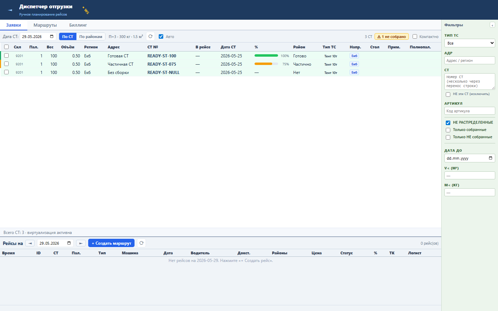
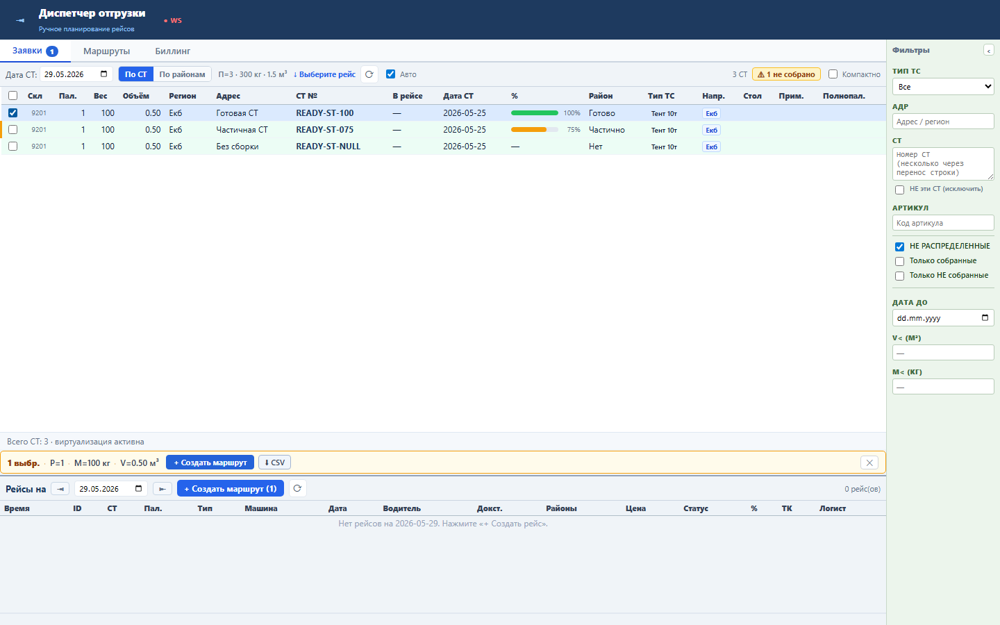

Диспетчер быстрее видит, какие свободные СТ уже полностью собраны и готовы к включению в рейс.
Поле VERIFY_PERC приходит в строке доступной СТ. Значение 100 добавляет класс dispatch-st-ready; частичные и пустые значения не подсвечиваются.
Sprint 50 закрыт functional, load и UI smoke проверками.

